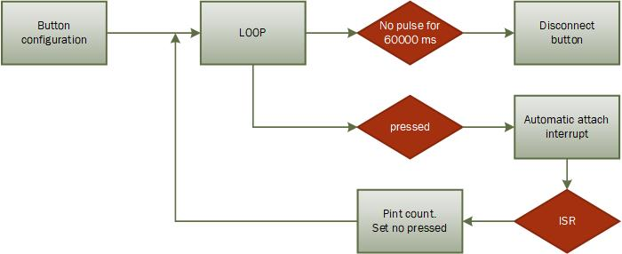
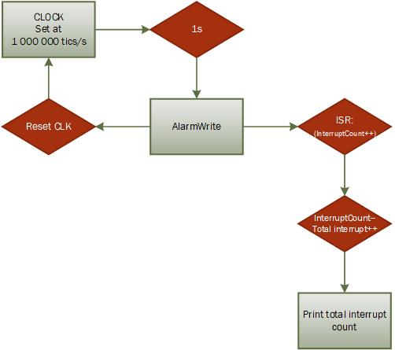

En esta practica realizamos dos tipos de interrupciones. La primera (A) controlada a través de un boton analógico y la segunda (B) por un contador de la micro.
En la cabezera encontramos la declaración de la estructura Button la cual guarda el numero del pin al cual este esta conectado, el numero de veces que se pulsó y su estado. Declaramos nuestro botón al pin 18 y el contador lo definimos a 0.
struct Button {
const uint8_t PIN;
uint32_t numberKeyPresses;
bool pressed;
};
Button button1 = {18, 0, false};
void IRAM_ATTR isr() {
button1.numberKeyPresses += 1;
button1.pressed = true;
}
void setup() {
Serial.begin(9600);
pinMode(button1.PIN, INPUT_PULLUP);
attachInterrupt(button1.PIN, isr, FALLING);
}
Finalmente hacemos que el boton se desactive tras 1 minuto de inactividad.
void loop() {
if (button1.pressed) {
Serial.printf("Button 1 has been pressed %u times\n", button1.numberKeyPresses);
button1.pressed = false;
}
//Detach Interrupt after 1 Minute
static uint32_t lastMillis = 0;
if (millis() - lastMillis > 60000) {
lastMillis = millis();
detachInterrupt(button1.PIN);
Serial.println("Interrupt Detached!");
}
}

Delcaramos las variables interruptCounter y totalInterruptCounter, la primera para manejar el contador internamente por si sucede alguna anomalia y el segundo para contar el nombre total de interrupciones des del inicio del programa.
hw_timer_t declara un temporizador de hardware utilizado para las interrupciones.
Se declara la variable timer de tipo portMUX_TYPE para sincronizar el loop principal y el ISR en el manejo de variables compartidas.
volatile int interruptCounter;
int totalInterruptCounter;
hw_timer_t * timer = NULL;
portMUX_TYPE timerMux = portMUX_INITIALIZER_UNLOCKED;
Contabiliza el nombre de interrupciones sucedidas. Enta y sale del modo CRITICAl para evitar comportamientos erroneos.
void IRAM_ATTR onTimer() {
portENTER_CRITICAL_ISR(&timerMux);
interruptCounter++;
portEXIT_CRITICAL_ISR(&timerMux);
}
La placa ESP32 tiene un reloj que trabaja a 80Mhz, así pues lo deberemos ajustar al numero de tics desados en cada caso en el segundo parametro. Funciona de la siguente mantera: frequency(80Mhz)/escalado(2ndo parametro de la funcion timerBegin). Inizializamos el contador (temporizador) y lo configuramos a 1000000 de tics por segundo. Utilizamos timerAttachInterrupt para detectar y ejecutar el ISR a cada salto de alarma.
La funcion timerAlarmWrite especifica en que punto del contador la interrupcion debe ser generada. Cuando el contador llegue a 1000000 de tics, saltará la alarma y sucederá la interrupción.true llama a reinicial el contador timer una vez esto haya ocurrido.
Por último habilitamos el contador.
void setup() {
Serial.begin(9600);
timer = timerBegin(0, 80, true);
timerAttachInterrupt(timer, &onTimer, true);
timerAlarmWrite(timer, 1000000 , true);
timerAlarmEnable(timer);
}
En el loop es donde manipulamos la interrupción. Si el numero de interrupciones es mayor a 0 entonces el contador de interrupciones global se reduce para marcar que la interrupcion ha sido manipulada. Como la variable interruptCounter es compartida con el ISR y el loop, se ejecuta esta accion en el marco CRITICAL.
Finalmente se incrementa el número de interrupciones sucedidas des de la ejecucción del programa y se muestran por pantalla.
void loop() {
if (interruptCounter > 0) {
portENTER_CRITICAL(&timerMux);
interruptCounter--;
portEXIT_CRITICAL(&timerMux);
totalInterruptCounter++;
Serial.print("An interrupt as occurred. Total number: ");
Serial.println(totalInterruptCounter);
}
}

https://github.com/PauAnton/Prac2.git